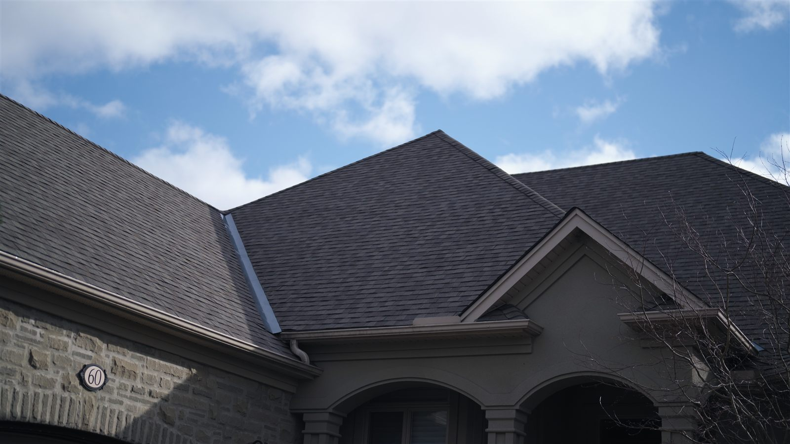
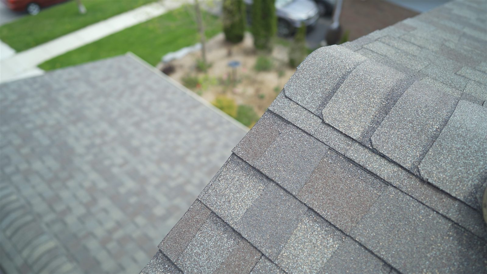
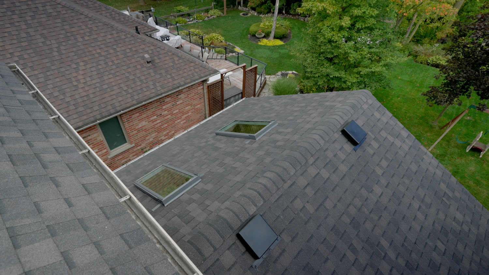

Real roofs from around Kitchener-Waterloo. What the job involved, what we found once the old roof came off, and what's worth looking at in the finished work.
Every job documented, including what the tear-off reveals
Down to the deck — the only method that qualifies for extended warranty coverage
Master Craftsman Roofing Contractor

This is the kind of roofline that costs more than its square footage suggests, and it's worth understanding why before you compare two quotes on a house like it.
Count the changes of direction. Two main hips meeting a long ridge, a valley running down behind the entry gable, another return on the right, and a dormer roof tucked in beneath. Every one of those is a flashing detail, not just more shingle. A valley has to be lined and the courses cut and seated into it on both sides. A hip needs its own cap course. The junction where a lower roof meets a wall needs step flashing worked up under the cladding, piece by piece.
A simple gable roof of the same area might have two flashing details on it. This one has a dozen. That's the difference between a roof that's measured and a roof that's estimated off a floor plan — and it's why we count facets rather than multiply square footage.
The finish is the tell. Look along the hip lines: they run straight, the caps are evenly spaced, and the courses meet the valley at a consistent line rather than wandering. That's what you're actually paying for on a roof this shape.

This is what a soft spot looks like once you stop guessing about it. The shingles have been lifted back, the underlayment cut, and the failed section of sheathing removed so the framing underneath can actually be seen.
That last part is the whole point of opening it up. Rotted sheathing is a panel you replace. Rot that has reached the rafters is a different job with a different price, and the only way to know which one you have is to take the deck off and look. Photographing it at this stage is how you end up agreeing a number with a homeowner instead of presenting them with a surprise afterwards.
Here the rafters are dry and solid, so the repair stays contained: new sheathing cut to fit the opening and fastened to the rafters either side, ice-and-water membrane over the joint, underlayment lapped back over that, and the shingle courses rewoven in so the repair disappears into the field of the roof.
Water almost never enters where the damage shows. It runs down the underside of the deck and rots the sheathing somewhere lower and to one side. Which is why we open up from the stain, not from where the ceiling is marked.

Two things are worth noticing here, and both of them are the sort of thing you only see if you go up and look.
The cap shingles. Along the hip and the ridge, each cap sits at a consistent exposure with the nails covered by the piece above. Uneven caps are the most visible sign of a rushed finish, and they're also where wind gets a start. Matching hip-and-ridge is a separate product from the field shingle — it isn't field shingle cut into three, which is what you sometimes find on a cheaper job.
The granule blend. This close, you can see the shingle is not one colour: it's several granule shades laid into a pattern to give the roof depth. That's why a sample chip in your hand never quite matches the finished roof — at street level those shades average out, and the roof reads lighter and more even than the sample did. If you're choosing between two shades, that's worth knowing before you commit.
Behind it, out of focus, is an older roof surface for comparison — flatter, greyer, with the granule definition worn off. That loss of granule is the shingle's sunscreen going, and it's a better indicator of remaining life than age alone.
Every job gets photographed as it goes — not just the finished roof. That includes the decking once it's exposed, the flashing before it's covered, and anything we find that changes the scope.
The reason is simple: almost everything that determines how long a roof lasts is invisible by the time the job is finished. Ice-and-water membrane at the eaves, new flashing at every wall and chimney, the ventilation, the condition of the wood your roof is fastened to — a finished roof looks the same whether those were done properly or skipped entirely.

Photographs are the only honest way to show you which one you got.
The failure chain from a nail head through the sheathing to the insulation.
GuideOur real range, the eight factors that move it, and why some quotes come in lower.
ColoursSee Landmark colours on your own home, and how to pick one that suits your brick.
Free, written, measured — and photographed as we go. Serving Kitchener, Waterloo, Cambridge, Elmira, Guelph, and surrounding areas.